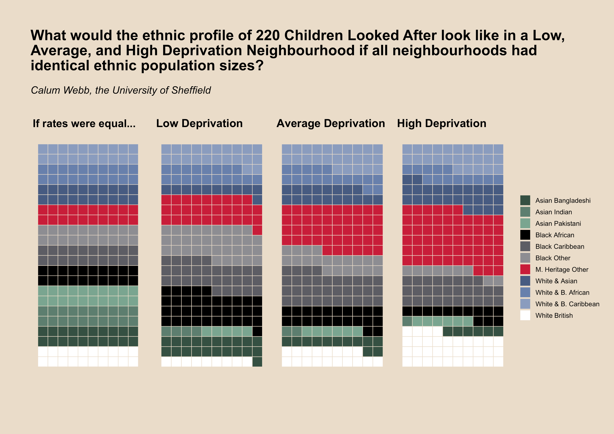

 This graph shows how existing ethnic disproportionality in child welfare interventions would affect the demographics of children taken into care in three differently deprived neighbourhoods if all had an equal size population from each ethnic group. You can see how, for example, Mixed Heritage (Other) children are over-represented in rates of children taken into care relative to their population size regardless of the level of deprivation, but their rates are also increasingly disproportionately high as deprivation increases. You can see how White British children are actually over-represented compared to a lot of other ethnic groups in high deprivation neighbourhoods, but under-represented in low deprivation ones. Lastly, notice how the social gradient differs: for Mixed Heritage and White British populations, the disproportionality tends to increase as deprivation increases, but for Asian and Black child populations, the disproportionality tends to decrease. We explore these patterns in our new paper. (Click the graph to view a colourblind friendly version).
A casual observer of debates in child protection is likely to be familiar with the following two observations: first, that Black children are disproportionately over-represented in the rates of children in care and, second, that poor children are disproportionately over-represented in rates of children in care. If your expertise and interest stopped there, you might conclude that the two are one and the same. More Black children are living in poverty and therefore more children in care are Black.
You might then, reasonably, conclude that both injustices could be tackled in one fell swoop, or at least that there is no harm in tackling each in their own realm because the end result will be a benefit to all oppressed groups. Lift all people out of poverty, or tackle structural racism, and both injustices would be remedied. An anti-racist agenda and an anti-poverty agenda, either will help all affected by child welfare inequalities. But what if the result was that action on one without the context of the other could actually worsen inequity?
A more-than-casual observer of ethnic disparity in the child protection system will tell you that all is not as straightforward as it seems. For example, that in poor neighbourhoods, the rates of Black children in care are actually significantly lower than the rates of White children in care; and that in more affluent neighbourhoods the opposite is true. This is well documented in international literature, with the same patterns appearing in the United States and the United Kingdom. Similar patterns between people with Western coloniser heritage and indigenous heritage also appear in countries like Canada, Australia and Aotearoa New Zealand.
It’s important to state that this cannot be explained by different ethnic groups being more likely to experience child abuse and neglect. The Office for National Statistics report that, even before controlling for different exposure to poverty and stressors that may increase the risk of abuse or neglect, Black respondents to the Crime Survey for England and Wales were less likely to report having experienced child abuse (0.75:1), and Mixed Heritage respondents were only marginally more likely to report experiencing abuse (1.2:1). By contrast, we estimated the rates of children on Child Protection Plans or in care were, on average, 1.2 times higher for Black children than White children, and 1.6 times higher for Mixed Heritage children than White children. Plainly put, ethnic disproportionality is likely a predominantly service-side inequality, and requires social workers, policymakers, directors of children’s services, and the profession at large to examine the way that social work and wider allied agencies reproduce ethnic inequalities.
There are, of course, far more ethnic groups to consider than those discussed above, of which we look at eleven in a new article in Children and Youth Services Review. Here, where our words are more limited, we want to focus on the differences in rates of children in care between the Black British child populations (with African, Caribbean, and ‘Other’ heritage), the largest Mixed Heritage population in the UK (‘Mixed Heritage (Other)’), and the White British child population, to illustrate how an intersectional understanding of child welfare inequalities is essential for informing effective policy and practice responses, and how it aligns with sociological literature about class, race, and parenthood in Britain.
We argue that these inequalities emerge at least in part as a product of the way that poverty and affluence is interpreted within the contexts of ethnic/racial identity, as well as through the differing obligations found in anti-discrimination legislation, and there is a wealth of literature to this effect. Complex inequalities may arise as a result of the interplay between cultural representations of racialised class identities, histories of institutionalised racism, physical and symbolic violence directed towards interracial relationships, and the disconnect between anti-racist and anti-classist policies and practice.
The most straightforward example of the representation of racialised class identities comes from television and popular media. Consider, for example, programmes like Benefits Street or characters like Vicky Pollard (“Yeah, but no, but”) or Lauren Cooper (“Am I bovvered?”), and the use of the word ‘chav’. These are not just parodies of Whiteness in general, they are parodies of poor White people - particularly poor White mothers with Mixed Heritage children - that are seeped into our national consciousness. They are presented as feckless, idle, criminal, and undeserving of compassion, and are subject to many of the same stereotypes that are applied to young Black people, but there is usually limited discussion of the way that these narratives shape the treatment of young White mothers living in poverty.
In the space of affluence, consider the cultural representation of affluent Black people - particularly affluent Black men. Black faces are normalised in cultural representations of poverty, usually presented through the gaze of the ‘White saviour’, and the representations of routes to wealth for Black people are commonly positioned within narratives of physical over intellectual effort and ability, as well as with criminality, drug dealing, and gang violence. In other words, poverty has historically been presented as the norm for Black families, and a deviation for White families.
Black men in relationships with White women have been particularly vilified throughout history, along with their partners, and oppressed physically, legally (in the form of anti-miscegenation laws in the USA), and symbolically in cultural representations of their motives. The Fletcher Report in 1930 famously stated that White women in relationships with Black men were either ‘mentally weak’, ‘prostitutes’, ‘young and reckless’, or forced into marriage through pregnancy. These social attitudes are far from consigned to history. One study in the US, as recently as 2008, found that 17 per cent of White men and 19 per cent of White women responded that they thought it ‘was not a good idea’ for White men to have children with Black women or for White women to have children with Black men, respectively. A further 36 per cent of men, and 45 per cent of women, responded that they ‘wouldn’t [have children with a Black woman/man themselves], but that it was okay for others’.
A history of institutionalised and systemic racism, racially segregated neighbourhoods, and racist cultural stereotypes coalesce into systems that place Black people under increased social surveillance and suspicion, not just by the state but by their neighbours, especially when they live in predominantly White, affluent neighbourhoods and send their children to predominantly White schools. A similar kind of surveillance exists for White mothers living in poverty, as their uses of state support - that they are entitled to - and their relationships, are closely monitored and scrutinised.
In both of these examples, the interpretation of class and poverty is heavily contingent on race, and vice versa. In both, too, children of Mixed Ethnic Heritage are disadvantaged in unique ways that are rarely discussed. In law and social work education the two matters are often dealt with outside the lens of the other. Anti-racist practice has a longer history in social work education (although it remains a marginal concern), while anti-poverty or anti-classist social work practice and education has been patchwork at best.
Further, social class is not a protected characteristic under anti-discrimination law and, as such, there is less of an imperative for anti-classist practice to be pursued seriously; especially under strained budgets, high workloads, and the depressing regularity that tabloids and politicians accuse social workers of being ‘overly politically correct’ and obsessed with ‘isms’ and ‘ologies’.
This combination of sociological factors may help us better understand why there are 15 times more White British children in care in high-deprivation neighbourhoods than there are in low-deprivation neighbourhoods; why rates of care for Black children are between 3.3 and 4 times higher than White British children’s in low-deprivation neighbourhoods, but the opposite in high-deprivation neighbourhoods; and why Mixed Heritage children seem to face the sharp edge of both class discrimination and structural racism. Thinking more critically about the racialised notions of class may be essential for uncovering and rectifying hidden biases in child protection, and confronting the long shadow of racism, anti-miscegenation attitudes, stigmatisation, and our contextual interpretations of poverty is essential.
As yet, there is far too little good research in the UK about race, class and the care system to be certain whether our theories are correct, and the data we rely on are far from perfect. All we can do is say that our analysis helps illuminate disturbing patterns in child welfare interventions, and that these patterns are consistent with the history of racism and oppression in our society. Social work has not escaped this.
Routine data is still not collected on parents’ socioeconomic circumstances, and we can see our society slipping back into a reluctance to call racism by its name as the media collectively move on from the Black Lives Matter protests. We would encourage you to reflect on your thoughts and, if you are a social worker, your practice through a racialised class or intersectional lens. How do you think about young mothers living in impoverished areas and how does their ethnicity (and the ethnicity of their children) affect your interpretation? What specific training or education have you had on Whiteness, multiethnic heritage, and poverty? Are you immune from the pejorative narratives of Benefits Street and Little Britain? Why might wealth shield White British families from social work intervention, but not their Black neighbours? How might institutionalised and systemic racism in other agencies and processes associated with children’s services create ethnic inequalities in child protection?
Based on our findings, what would happen if we just tackled economic inequalities without deliberate efforts to reduce ethnic inequalities? The rates of children in care would drop massively for White British and Mixed Heritage children, and a few other ethnic minority groups would see some reductions, but the rates for Black African and Black Other children would probably stay much the same. The rates for Black Caribbean children would decrease less than half the amount that they would for the White British children. The end result would be that ethnic inequalities would increase.
How about if we just pursued ethnic proportionality without attention to class and poverty? If you want proportionality in overall rates, Black children who are already disproportionately under-represented in poor neighbourhoods would need to be further under-represented, creating greater ethnic inequalities within similarly deprived neighbourhoods. If you want greater proportionality within similarly deprived neighbourhoods, you would, paradoxically, need to intervene more frequently with Black populations. This would increase ethnic disproportionality and the social gradient overall.
And what of the Mixed Heritage children for whom inequalities will persist under either option? Under the former, there would still be a gulf of difference between them and their peers from other ethnic groups and, in the latter, the same would be evident between richer and poorer counterparts.
The evidence tells us that anti-racist social work should be pursued with explicit reference to the link between class and race, and that anti-poverty social work must not assume all racial disparities can be explained by economic disparity. Tackling either alone will tackle neither. The problem is extremely complex, as we discuss in the paper, but that is not an excuse to water it down or to seek shortcuts. Moreover, there are other important intersections to consider: gender, nationality, sexuality, and disability to name but a few. Perhaps we might be better served by thinking about Intersectional Justice, and how we create policies and practice to achieve this.
In order for social work to achieve racial and class justice it is necessary for it to achieve both. Resources for doing so already exist in the form of anti-oppressive practice, but it must be made clear that this kind of anti-oppressive practice cannot be achieved when racial equality and class equality are treated as separate agendas. When they are, intersectional injustice remains hidden. Moreover, these patterns are global, and that tells us that what we’re seeing is not just the result of erratic histories in place - certain groups fallen into strange relations with social services - but about the very fundamentals of how class, race/ethnicity, and poverty play out in society and the processes of social control and social ordering.
There must be personal commitments to unlearning racism and prejudice, critically examining whiteness, and learning how society is structured by race and class. Change requires courage and a willingness to confront and reflect on institutionalised injustices that practitioners, managers, policy makers and researchers are all caught up in and subjected to in their own lives. But responsibility must never fall solely on the shoulders of practice and practitioners.
We cannot naïvely assume that social workers can easily transition from current ways of working through (un)learning alone. Pursuing anti-oppressive practice makes social work more complex and more time consuming. Achieving it requires adequate resourcing of social services and investment in social work, as well as in allied causes and organisations, especially those led by people with lived experience of racism and class discrimination. It requires commitments to dismantling racism and the impact of structural inequality, not just the acknowledgment of it. And this must be done by all agencies and institutions: education, justice, welfare, and housing to name a few. If the police disproportionately target Black teenagers in areas that they ‘don’t belong’ for stops and searches, more ethnic disproportionality will emerge in social work. If schools in predominantly affluent, White areas, over-surveil their Black, Asian, and Mixed Heritage students, more ethnic disproportionality will emerge in social work.
While the Black Lives Matter movement starts to see some success in their calls to defund the police and invest more into other services including social work, we must remember that social work hardly has a spotless record on racial equality, and many people do not know about the levels of ethnic disproportionality in family social work. Before I started researching children’s social services, I also held a rose-tinted view of social work. Restructuring systems of social control and order risks trading one form of oppression for another when the new system is not critically examined. If the social work profession wants to prove they deserve the trust of communities fighting for the rights of oppressed people, it needs to be upfront about its shortcomings and deliberate in its actions to confront them by moving towards social models of child protection.
We, as well as others, have exposed that inequalities in child protection are intersectional. We now need to see organisational and societal commitments to monitoring these intersectional inequalities and creating change, so that they are not allowed to retreat back to the shadows. In doing so, we must remember that nothing will change unless we can see it change. Be skeptical of words without action, action without results, and results without accountability and transparency. Only through vigilance will we keep a light on injustice, and in that light we can manifest change.
{kind=link}